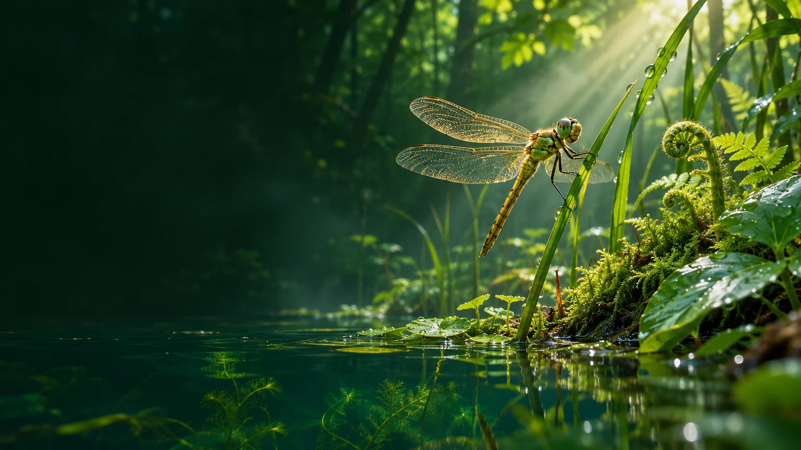
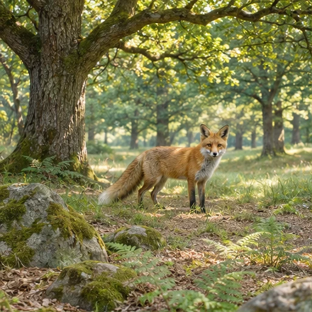
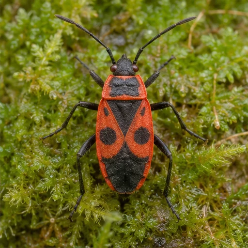
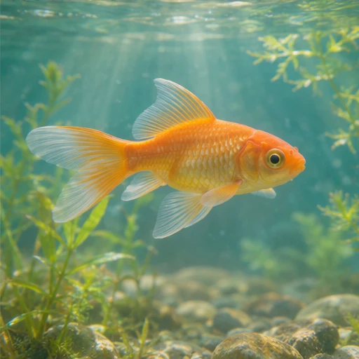

SCIENCES DE LA VIE ET DE LA TERRE
Explore
le vivant.
Observe, compte et classe. Six missions pour explorer le vivant.
Lancer la première mission
À TOI DE JOUER
Les missions

01ÉCOSYSTÈMES
La forêt à la loupe
Repère le vivant et son milieu.

02CLASSIFICATION
À qui sont ces pattes ?
Identifie les animaux à leurs indices.
 03
03CLASSIFICATION
Le code des plantes
Suis les indices, des feuilles aux fruits.
 04
04RESPIRATION
Le test de la souris
Prépare une expérience avec un témoin.
 05
05RESPIRATION
Le mystère du criquet
Fais avancer le temps et compare les deux boîtes.

06RESPIRATION
L’enquête sous l’eau
Cherche la trace de la respiration du poisson.